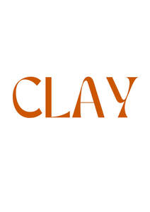
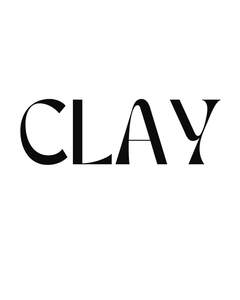

Trade Mark Journal No.2025/026 27 June 2025
UK00004160460 14 February 2025 (16,33,35,41,43)
Mark 1

Mark 2

- Class 16
- Printed novelty wine labels.
- Class 33
- Alcoholic beverages (except beers); wines, spirits, champagnes, liqueurs and brandy.
- Class 35
- Advertising; business management; business administration; office functions; organisation, promotion and management of exhibitions relating to food and drink and the service of food and drink for commercial or advertising purposes; advertising, promotional services, placing of advertising, direct mail advertising services, outbound telemarketing campaigns, marketing, all relating to exhibitions; ticket sales relating to exhibitions for commercial or advertising purposes; product launches; business networking services; all of the aforesaid services in the field of food and drinks.
- Class 41
- Arranging and conducting of classes for amphora wines; Arranging and conducting of conventions for amphora wines; Arranging and conducting of cultural activities for amphora wines; Arranging and conducting of educational events for amphora wines; Arranging and conducting of educational seminars for amphora wines; Arranging and conducting of entertainment activities for amphora wines; Arranging and conducting of entertainment events for amphora wines; Arranging and conducting of lectures for amphora wines; Arranging and conducting of seminars and workshops for amphora wines; Arranging and conducting of wine tasting events for educational purposes for amphora wines; Arranging and conducting of wine tasting events for entertainment purposes for amphora wines; Arranging and conducting of workshops and seminars for amphora wines; Arranging conferences; Wine tasting events for educational purposes for amphora wines; Wine tasting services (education) for amphora wines; Wine tastings [educational services] for amphora wines; Wine tastings [entertainment services] for amphora wines; Festivals (Organisation of -) for cultural purposes for amphora wines; Festivals (Organisation of -) for educational purposes for amphora wines; Festivals (Organisation of -) for entertainment purposes for amphora wines; Festivals (Organisation of -) for recreational purposes for amphora wines; Arranging and conducting of wine tasting events for educational purposes for amphora wines; Arranging and conducting of wine tasting events for entertainment purposes for amphora wines; Publishing of printed matter relating to amphora wines; schools for wine waiters.
- Class 43
- Consultancy, advisory and information services in relation to food and drink and the service of food and drink; services for providing food and drink; Providing food and drink catering services for fair and exhibition facilities; wine bars; temporary accommodation; hotel reservation services; marquee hire; restaurant, hotel, bar, wine bar and cafeteria services; catering services; art gallery fair and exhibition facilities.
Slonk Ltd